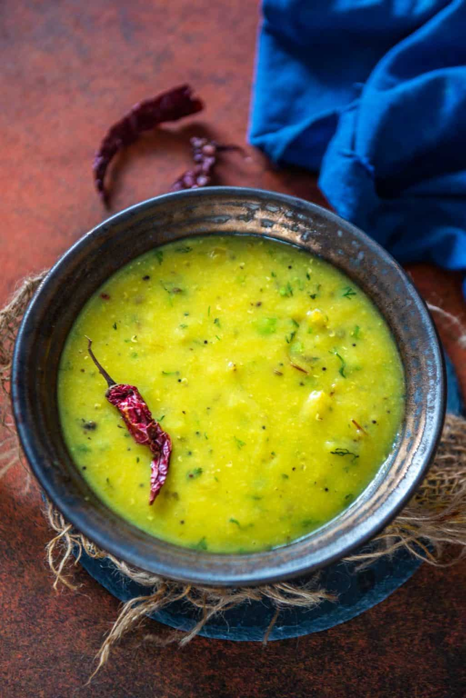

Dal

Description
A delicious hearty vegetarian meal. A staple for Indian and Bengali households. Bengali style Masoor dal has a unqiue taste due to the use of panch phoron (Bengali Five Spice). Great side dish or meal accompanied with rice or roti.
Ingredients:
- 1 cup red masoor dal
- 3-½ cups water
- salt to taste
- ½ teaspoon turmeric powder
- 2 tablespoon mustard oil
- 2 whole bay leaves
- 2 whole dry red chilies
- 1 teaspoon panch phoran
- ½ cup sliced onion
- 2 tablespoon chopped coriander
Directions:
- Wash 1 cup red lentils (masoor dal) well with water 2-3 times.
- Drain the water and add the dal to a pressure cooker.
- Note – You can also cook the dal in an instant pot (PRESSURE COOK for 8 mins on high pressure) or in a pot over stovetop (30-40 minutes on medium heat)
- dd 3 and ½ cups of water, salt to taste, and ½ teaspoon turmeric powder to the cooker and close the lid. Pressure cook for one whistle on high heat.
- Simmer the heat to low and cook for 8-10 minutes
- Remove the cooker from heat and let the pressure release naturally. Open the lid and whisk the dal well using a wire whisk.
- Heat 2 tablespoon mustard oil in a small pan.
- Once the oil is hot, add 2 whole bay leaves, 2 whole dry red chilies, and 1 teaspoon panch phoran and let them crackle for 4-5 seconds.
- Add ½ cup sliced onion and fry on medium heat until onion turns slightly browned,5-6 minutes. Keep stirring at regular intervals while frying
- Pour the tempering over the dal and mix well.
- Garnish with fresh coriander and serve hot.